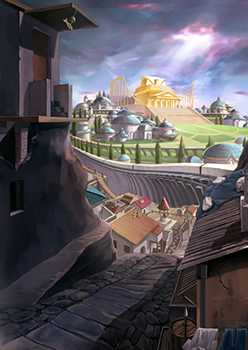
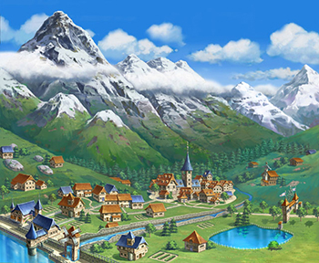

画像にリンクがはってあるものは、クリックすると別窓で大きめサイズが表示されます。
|  |  |
| リヒタルゼン | リヒタルゼン(マップ) |
|  |  |
|
| フィゲル | オーディン神殿 | タナトスタワー |
 |
 |
| フィゲル(マップ) | アビスレイク |
 |
 |
| ルティエ | 旧ルティエ |
back
(c) Gravity Co., Ltd. & Lee MyoungJin(studio DTDS). All rights reserved.
(c) GungHo Online Entertainment, Inc. All Rights Reserved.
当コンテンツの再利用（再転載・配布など）は、禁止しています。